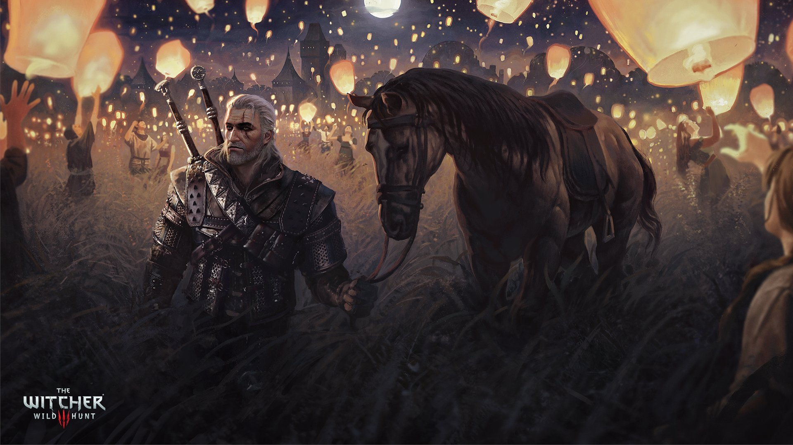
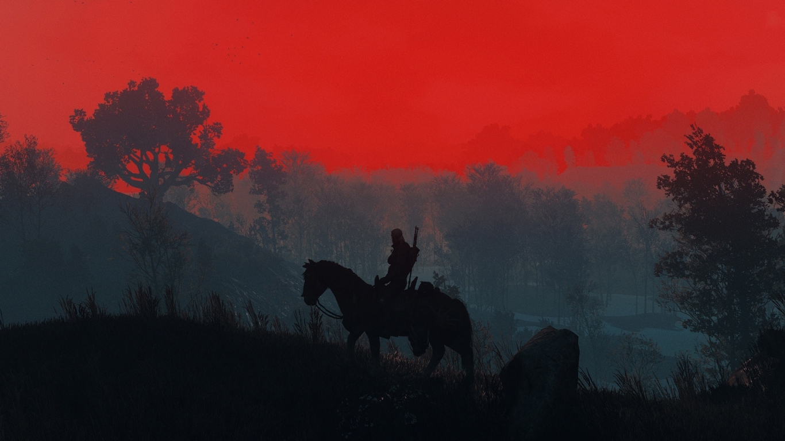
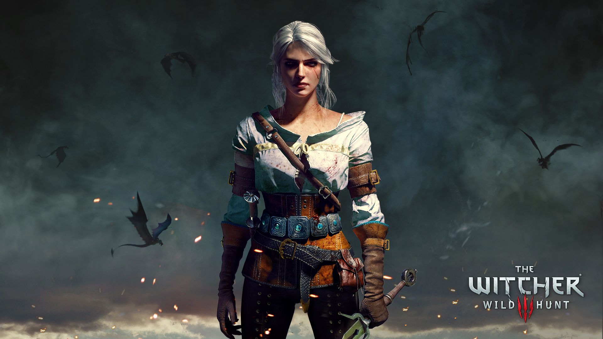
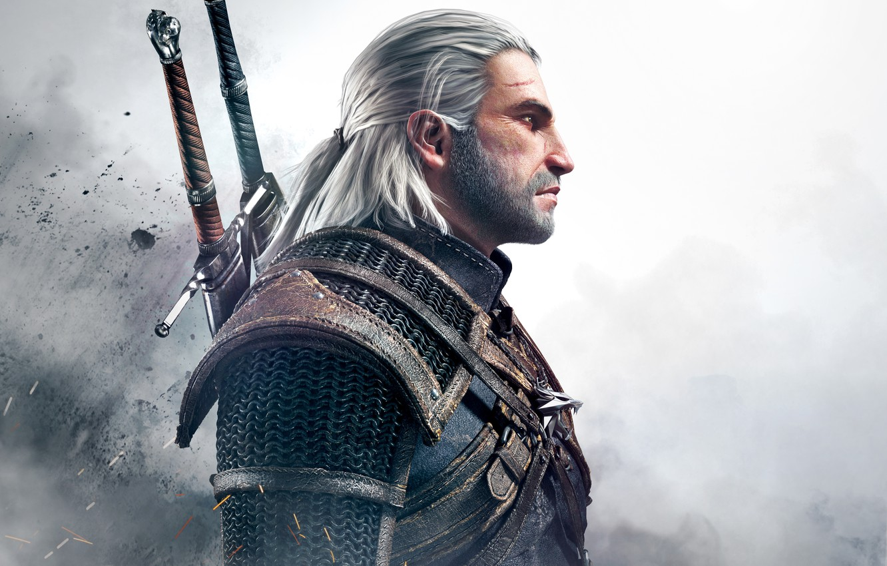
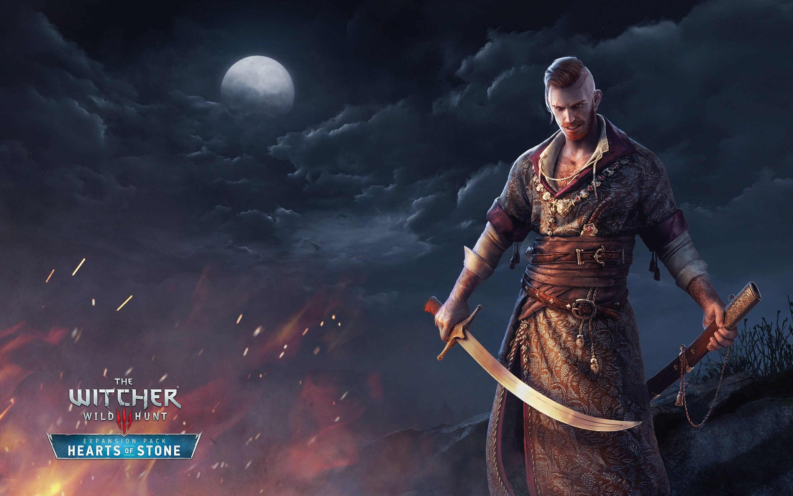
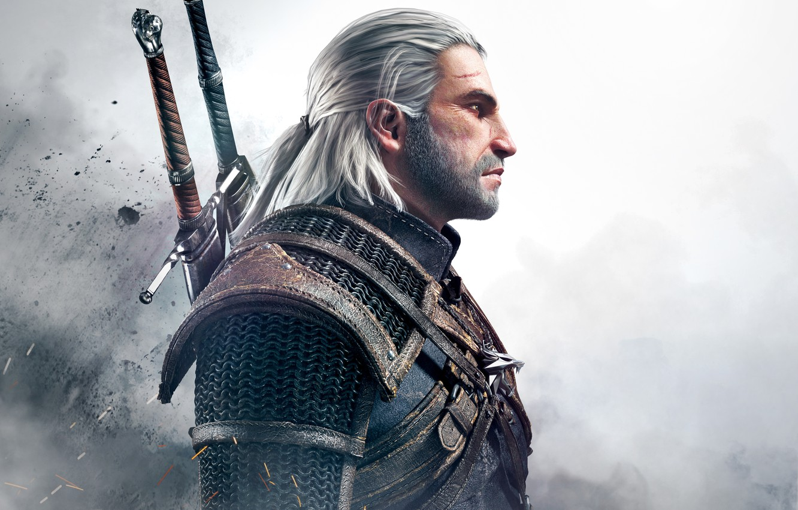
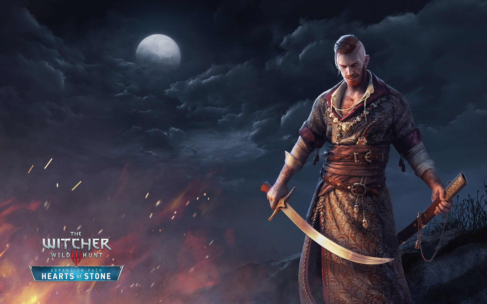
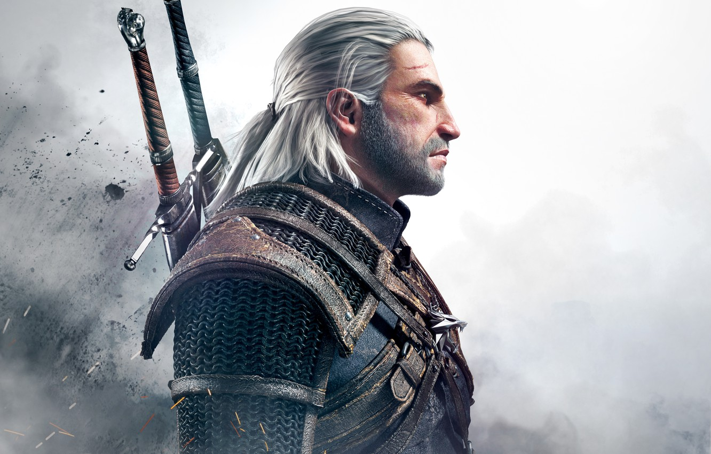
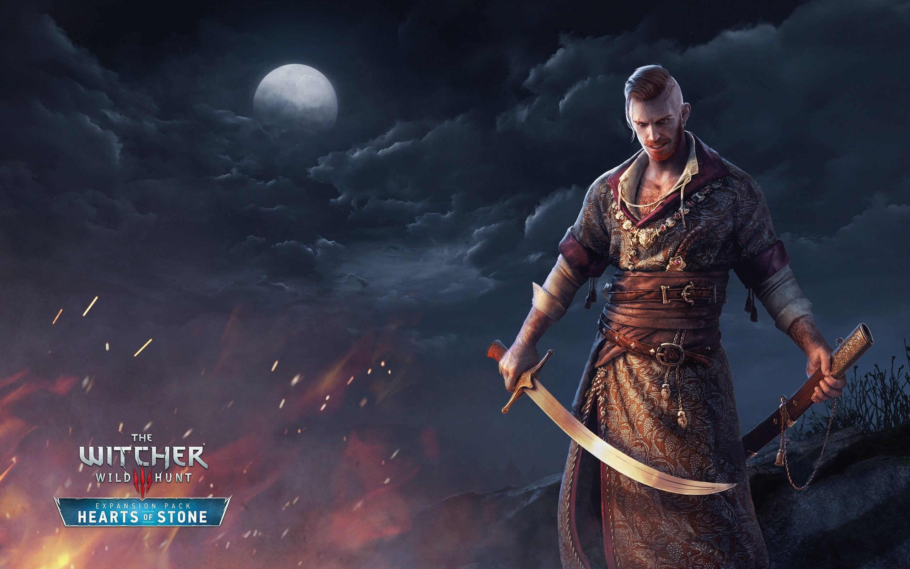

Wallpapers mais recentes da comunidade



 



O The Witcher Universe é uma comunidade dedicada aos fãs de The Witcher. Aqui você encontrará diversos conteúdos referentes aos livros, a série e principalmente aos jogos da franquia. Você também vai encontrar wallpapers disponibilizados por outros fãs, assim podendo personalizar seu dispositivo móvel e desktop.
The Witcher (em polonês: Wiedźmin) é um jogo eletrônico de RPG de ação desenvolvido pela CD Projekt RED e publicado pela Atari. Baseado na série de livros Wiedźmin, do escritor polonês Andrzej Sapkowski, The Witcher se passa em um mundo de fantasia medieval e segue a história de Geralt de Rívia, um dos últimos bruxos restantes na Terra. Ele é um destemido andarilho e caçador de monstros, dotado de capacidades físicas sobrenaturais. O sistema de "escolhas morais" que faz parte do enredo do game foi reconhecido pelas consequências geradas na história.
O jogo utiliza a engine Aurora, propriedade da BioWare. Uma versão para consoles usando uma engine totalmente nova e um novo sistema de combate, intitulada The Witcher: Rise of the White Wolf, iria ser lançada no outono de 2009, mas foi cancelada por conta de problemas com o pagamento da desenvolvedora da nova versão, a Widescreen Games. Em 18 de setembro de 2009, a CD Projekt RED confirmou oficialmente que haviam começado a trabalhar numa sequência, The Witcher 2: Assassins of Kings, lançado em 17 de maio de 2011 no PC e em 17 de abril de 2012 no Xbox 360.
The Witcher 3: Wild Hunt foi desenvolvido pela CD Projekt RED e lançado no dia 19 de maio de 2015 para as plataformas Microsoft Windows, PlayStation 4, Xbox One e em outubro de 2019 para o Nintendo Switch, sendo o terceiro título da série de jogos The Witcher. Ele sucede The Witcher (2007) e The Witcher 2: Assassins of Kings (2011).
Sinta-se à vontade para enviar seus wallpapers, clipes, builds e dicas através do nosso fórum. Lá você poderá criar tópicos dos mais variados temas referentes à franquia The Witcher e irá interagir com outros usuários. Mas lembre-se: mantenha sempre o respeito.

